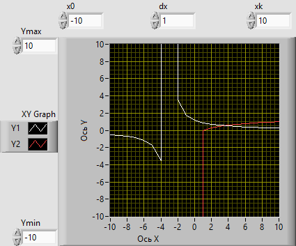
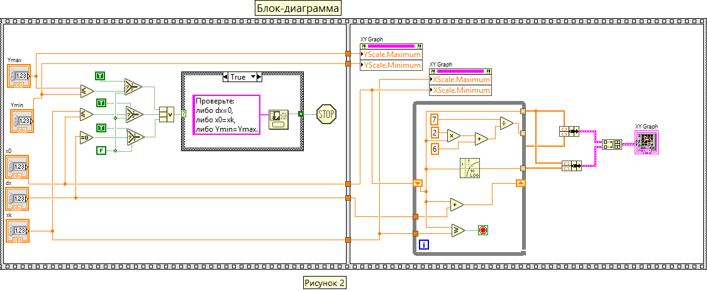

Представлен виртуальный прибор (на рисунках 1 и 2 представлены лицевая панель и блок-диаграмма данного ВП), позволяющий локализовать и получить минимальный по модулю ненулевой корень уравнения lg x - 7/(2+х)=0 с заданной точностью
Заданное уранение можно привести к виду lg x = 7/(2+х) и отобразить на графике, например, на отрезке изменения аргумента X от -10 до 10 с шагом 1 две кривые функций. Величина шага dx=1.
Если точка пересечений этих двух функций окажется на заданном отрезке изменения аргумента [-10..10], то на следующем этапе нужно задать более мелкий отрезок (0..1) изменения аргумента, внутри которого находится точка пересечения этих двух функций и уствановить шаг dx=0.1. Этот процесс нужно продолжать до тех пор, пока точка пересения вышеуказанных функций не окажется внутри отрезка изменения аргумента, величина которого будет равна шагу dx (т.е. xk=x0=0.001)
После запуска ВП, перед локализацией корня, в первом кадре осуществляется проверка заданных числовых значений элементов управления x0, dx, xk, ymin, ymax
